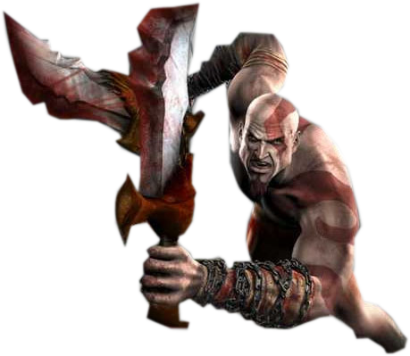

Um pouco sobre a História
Kratos é um guerreiro espartano que trabalha a serviço dos Deuses, Quando estava a beira da morte clamou por ajuda ao Deus da Guerra (Ares), que lhe deu as lâminas do caos, forjadas nas profundezas do submundo, e com isso começou a matar pelo Deus da guerra. Ares então o ordenou que atacasse uma vila sem que soubesse que sua mulher e filha estavam lá, no meio da matança, kratos acabou entrando em um templo e as matou, cego pela raiva.

As Lâminas do Caos foram forjadas nas profundezas mais obscuras do submundo pelo próprio Ares. Elas foram imbuídas de fogo, o que faz com que elas acendam a cada golpe que o usuário realiza. As correntes das Lâminas estendem-se por uma distância fixa a cada ataque, o que permite um movimento fluido, não importando quem as maneje. As correntes das lâminas estavam permanentemente presas aos antebraços do portador, e serviam como um lembrete do seu juramento ao Deus da Guerra. As correntes só podiam ser removidas pelo próprio Deus da Guerra, ou, então, quando o tempo de servidão do portador terminasse. No entanto, quando seu criador está morto e o servo ainda as possui, elas podem ser removidas ou equipadas a hora que o usuário desejar.

Ele tinha matado sua própria esposa e filha. Para tornar tudo mais trágico, essa situação foi planejada pelo próprio Ares, a fim de acabar com o resto de coração mole que o Kratos tinha e fazer dele um matador ainda mais eficiente. O Oráculo amaldiçoou o espartano, fazendo com que as cinzas de sua família cobrissem sua pele e que todos que o vissem soubessem o que ele fez. A partir daquele dia, Kratos seria conhecido como “o Fantasma de Esparta”.